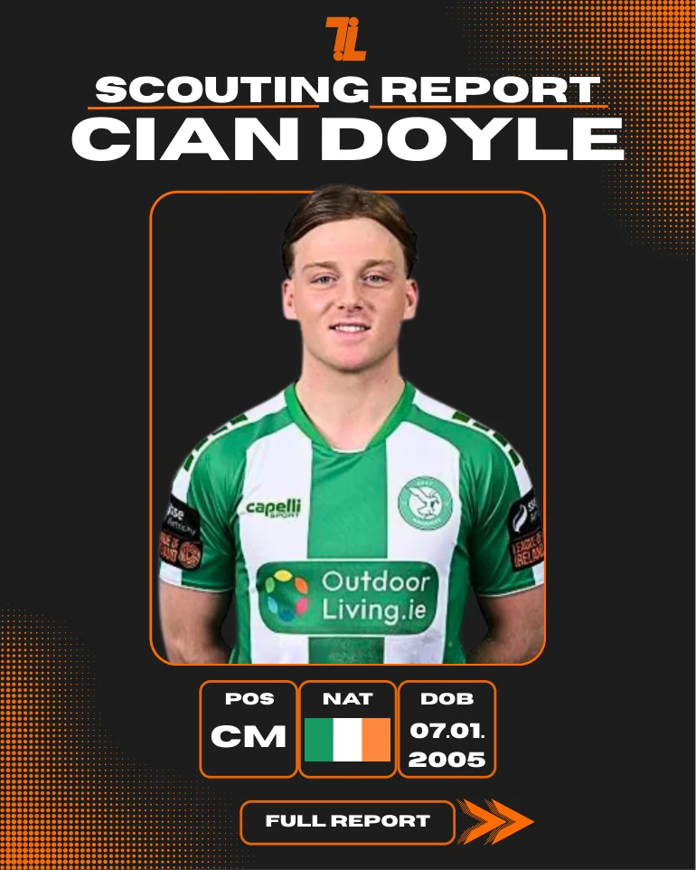
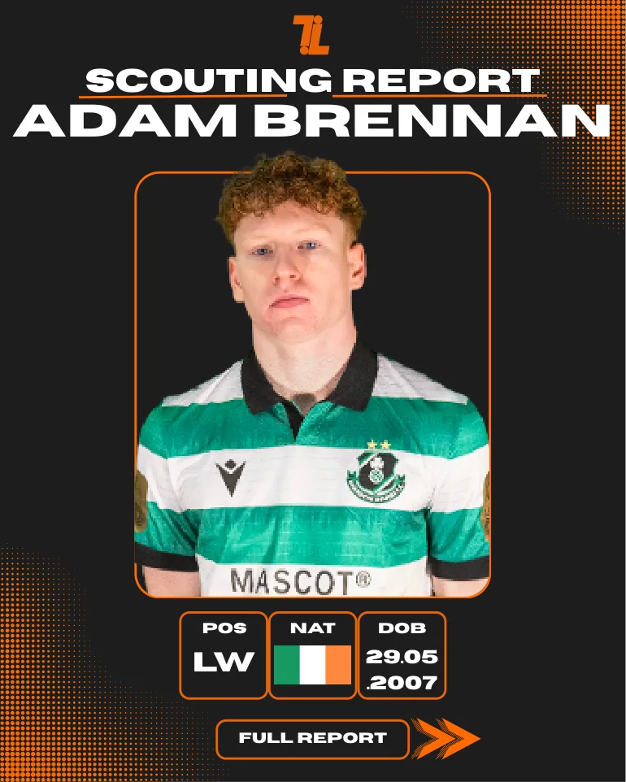
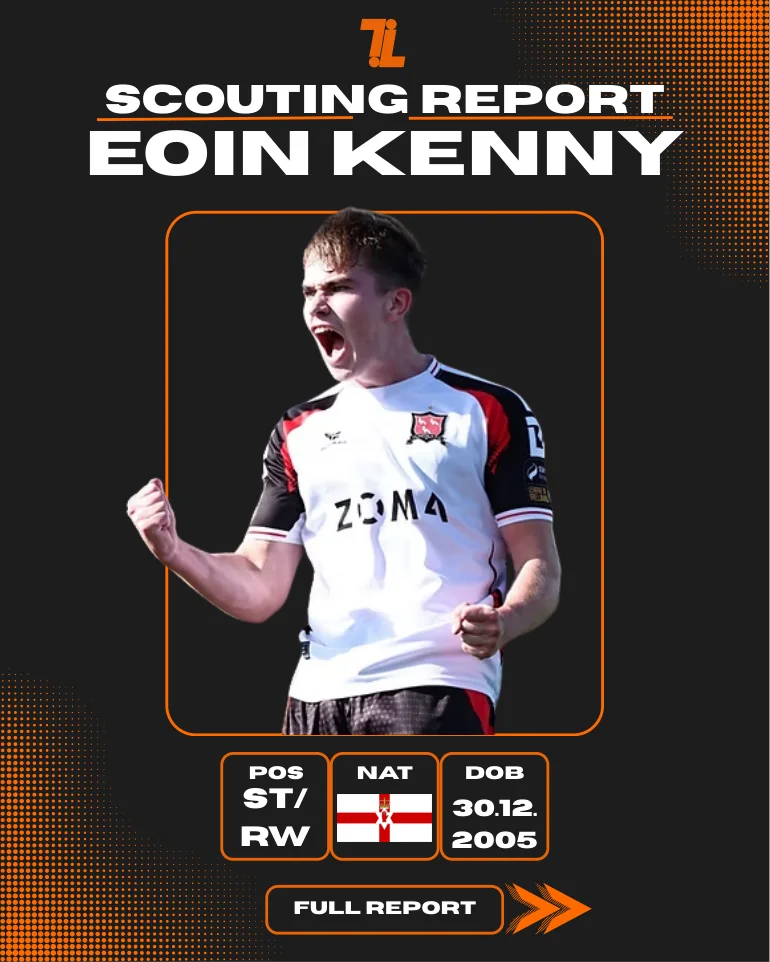
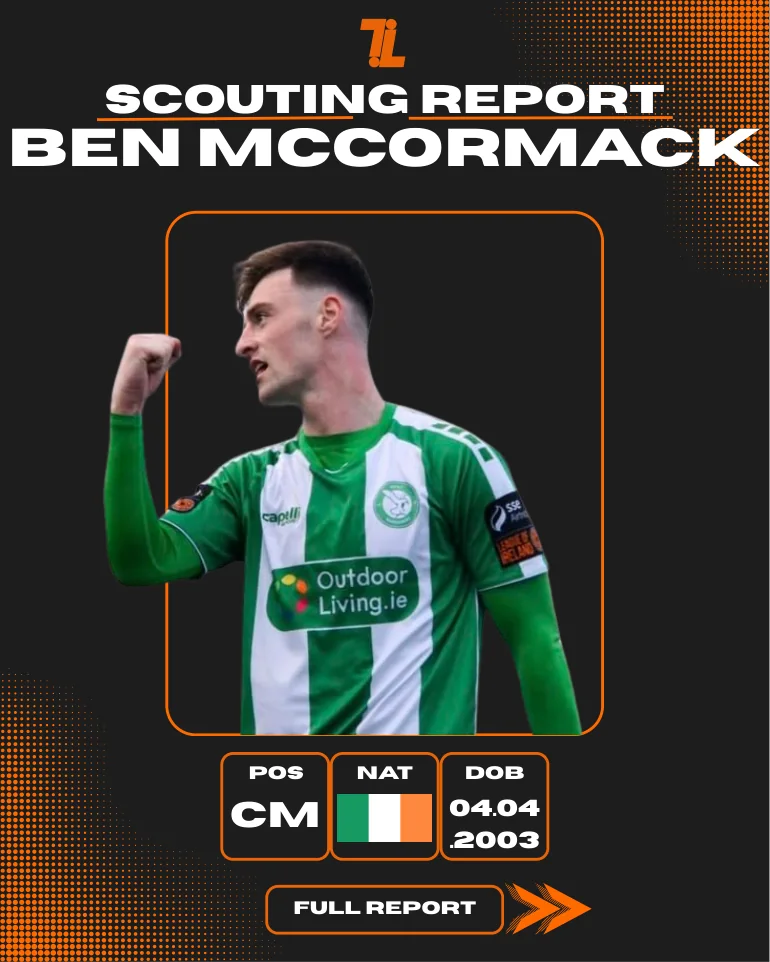
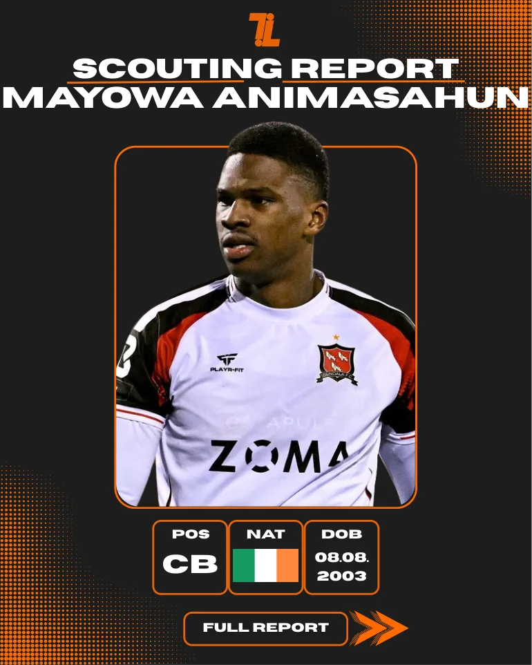

Looking beyond the highlights.
Independent player scouting reports examining in-possession and out-of-possession performance, technical and physical qualities, positional roles and recruitment potential. Each report preserves the original assessment and its statistics at the date shown.
Latest report.

Louis Dignam.
2026 end-of-season assessment of UCD's intelligent, technically accomplished midfielder, examining how he dictates tempo, contributes across the pitch and projects as a recruitment option at a higher level.
All other scout reports.
Original reports, with statistics accurate as of the listed assessment dates.

Ronan Teahan
A mobile, progressive midfielder whose ball carrying, movement and pressing helped him settle into the Premier Division.
Read the full report ↗
Cian Doyle
Defensive positioning, anticipation and ball recoveries, with a focus on his development as a number six.
Read the full report ↗
Adam Brennan
An intelligent attacking player with strong combination play, movement between lines and positional flexibility.
Read the full report ↗
Eoin Kenny
Direct running, shot generation and final-third involvement, with finishing efficiency as an area to develop.
Read the full report ↗
Ben McCormack
A creative attacking midfielder with goals, progressive dribbling and a strong influence around the penalty area.
Read the full report ↗
Mayowa Animasahun
An aerially imposing centre-back with strong defensive duel numbers, box protection and set-piece threat.
Read the full report ↗